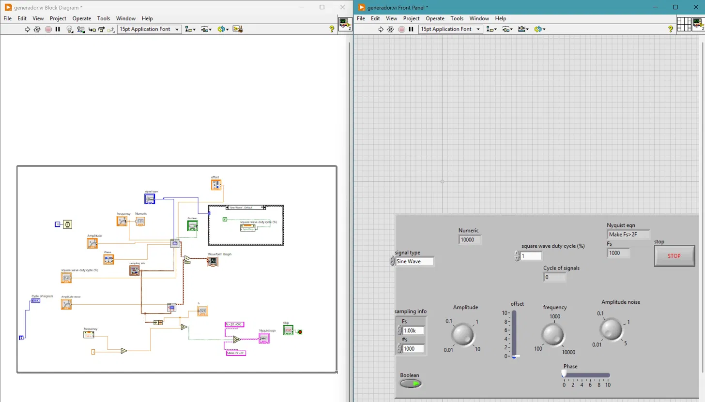
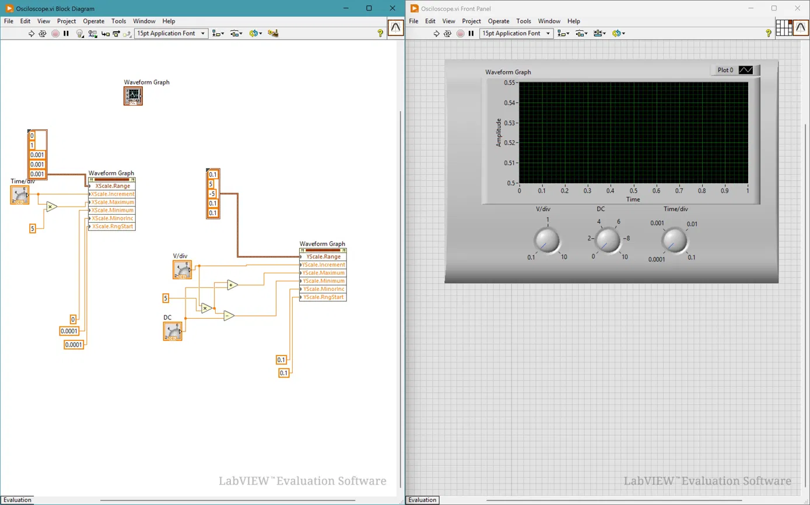
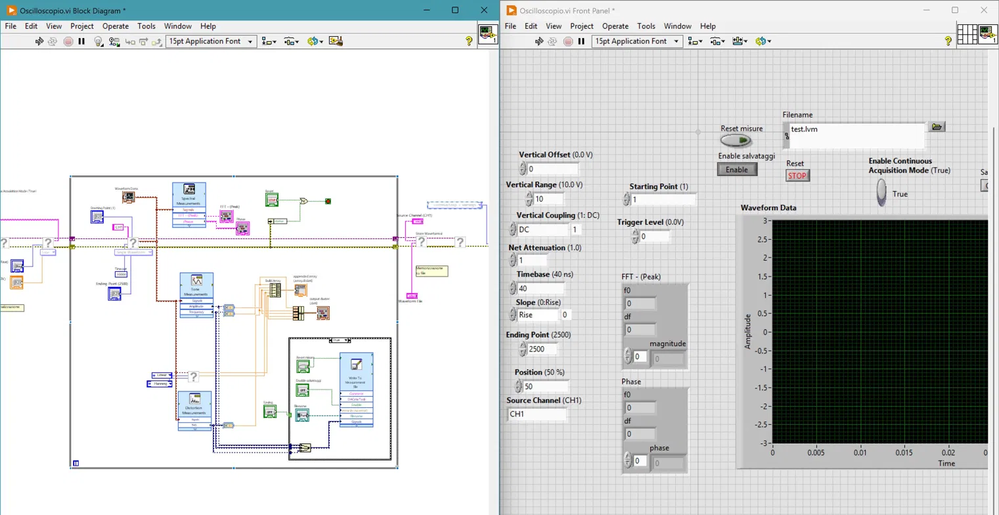
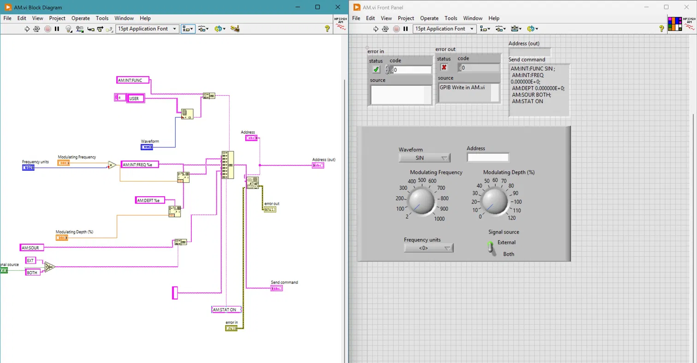
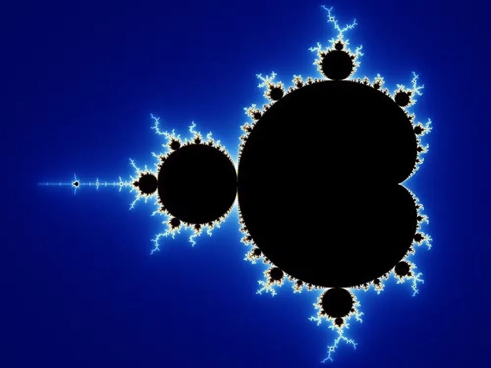

Projects Covered
Function Generator
Sine, square, triangle, sawtooth waveforms with noise, Nyquist enforcement, and duty-cycle control. Real-time display via Waveform Graph.
Virtual Oscilloscope
Configurable V/div, time/div, DC offset knobs with property nodes controlling X/Y scale. FFT and waveform measurements.
GPIB / HP 33120A Control
SCPI command automation of an Agilent 33120A arbitrary function generator. AM modulation via IEEE 488.2 bus commands.
LXI Oscilloscope (DS2102A)
Full remote control of Rigol DS2102A via LXI/VISA. Waveform acquisition, TMC header parsing, and voltage reconstruction.
Mandelbrot Fractal
Iterative complex-plane computation of the Mandelbrot set rendered as a high-resolution colour map in LabVIEW.
Function Generator & Virtual Oscilloscope
generador.vi — Multi-Waveform Function Generator
Designed a fully parametric signal generator VI with the following specifications:
| Parameter | Range | Increment |
|---|---|---|
| Waveform | Sine / Square / Triangle / Sawtooth | — |
| Frequency | 100 Hz – 10 kHz | 10 Hz |
| Amplitude | 100 mV – 10 V | 0.1 V |
| Offset | 0 – 5 V | 0.1 V |
| Phase | 0 – 360° | 5° |
| Noise | 0 – 1 V | 0.1 V |
| Duty Cycle | 5 – 95 % | 5 % |
Nyquist criterion enforced: if the user-set frequency exceeds Fs/2, the VI automatically corrects the sampling rate and displays the updated value. Cycle counter tracks how many complete signal periods have been generated.

osciloscopio.vi — Virtual Oscilloscope with Property Nodes
A software oscilloscope receiving the generator's waveform output. X-scale and Y-scale are driven by LabVIEW Property Nodes so the display grid matches real hardware knob settings precisely.
Waveform measurements implemented: Vmax, Vmin, VDC, VRMS, FFT spectrum (magnitude & phase), and amplitude histogram with configurable bin count.


GPIB Bus Control — HP 33120A Arbitrary Function Generator
ondaBasica.vi + AM.vi — Remote Instrument Control via GPIB
Automated the HP 33120A arbitrary function generator over the GPIB bus (IEEE 488.2 / SCPI). The VI builds instrument command strings programmatically and sends them via GPIB Write.
Key SCPI commands implemented:
Decimal separator issue handled: IEEE 488.2 requires point notation regardless of OS locale — enforced via Format Into String with explicit dot format.

| SubVI | Function | Bus |
|---|---|---|
| scanner.vi | Scan all GPIB addresses using FindLstn + *IDN? | GPIB IEEE 488.2 |
| ondaBasica.vi | Parametric waveform output (freq, amp, offset, shape) | GPIB SCPI |
| AM.vi | AM modulation: carrier + modulator config + enable | GPIB SCPI |
| ADRESS LIST.vi | Device discovery and identification via VISA | GPIB / VISA |
Full Practice Report
LXI Bus Control — Rigol DS2102A Digital Oscilloscope
Complete Oscilloscope Remote Control via LXI/VISA
Implemented full remote control of the Rigol DS2102A (100 MHz, 2 ch, 2 GSa/s) over the LXI (LAN eXtensions for Instrumentation) bus using VISA write/read calls.
Waveform reconstruction from raw BYTE data:
TMC header #NXXXXXX parsed to extract waveform length before converting the byte array to voltage using String To Byte Array + Array Subset.
SubVI Architecture
- Horizontal Channel control.vi — :TIM:SCAL, :TIM:OFFS
- Vertical Channel control.vi — :CHAN:SCAL, :OFFS, :COUP
- Trigger configuration.vi — :TRIG:EDGE:LEV, :SOUR
- Waveform reader.vi — :WAV:DATA? + TMC decode
- Convert to volt.vi — YVOLTS equation + Build Waveform
- Final Practice 4_2.vi — Main: config Event loop + 1s Timed Loop
| SCPI Command | Purpose |
|---|---|
| :CHAN1:SCAL 1.000 | Vertical scale 1 V/div |
| :CHAN1:COUP DC | DC coupling |
| :TIM:SCAL 5e-4 | Timebase 500 µs/div |
| :TRIG:EDGE:LEV 1.0 | Trigger level 1 V |
| :WAV:SOUR CHAN1; :WAV:FORM BYTE; :WAV:DATA? | Acquire waveform in BYTE format |
| :WAV:YOR?; :WAV:YREF?; :CHAN1:SCAL? | Query scaling parameters |
Full Practice Report
Mandelbrot Fractal Computation in LabVIEW
Fractal.vi — Iterative Mandelbrot Set Renderer
Implemented the Mandelbrot set in LabVIEW by iterating the complex recurrence:
Each point in the complex plane is coloured by its escape-time count, producing the characteristic fractal boundary. The implementation demonstrates LabVIEW's capability for numerical computing beyond instrumentation — directly applicable to DSP, acoustic simulation, and signal analysis pipelines.
This project was presented as evidence of algorithmic programming depth alongside the instrumentation work.

Skills & Competencies
Competencies demonstrated across all practices and directly relevant to NVH/ATE test engineering roles requiring LabVIEW proficiency:
Matching Job Requirements — NVH Test Rig Engineer (Stellantis e-Transmissions)
- LabVIEW experience demonstrated across 3 full practices and bonus project
- Programming background in SCPI command building, string ops, numeric conversion
- DAQ / data acquisition: GPIB + LXI waveform reading, FFT, histogram, RMS
- Instrument control (function generator + oscilloscope) — same as PUMA/CANape workflow
- Knowledge of sensors, signal conditioning, and measurement theory (Nyquist, CFL)
- Control theory awareness via Erasmus Mundus acoustics curriculum
- Structured, modular VI design: subVI hierarchy, event structures, timed loops
- English fluency — all documentation and reporting in English